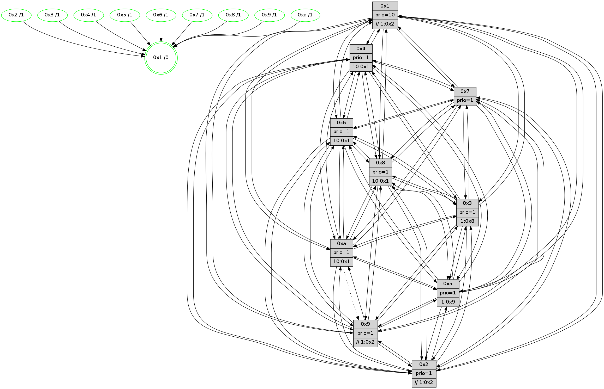

>> << IDX [start] -100 -25 -5 +0 +5 +25 +100 [750.001145124]
 Previous packets
----------------------------------------------------------------------
745.212376 beacon01(faad) #0 coord=01,02,03,04,05,06,07,0a,09,08 cycle=688.0ms assoc
-- color-indic=1 64 df d4
745.222358 beacon02(faad) #0 coord=01,02,03,04,05,06,07,0a,09,08 cycle=688.0ms assoc 64 4c e5
745.232357 beacon03(faad) #0 coord=01,02,03,04,05,06,07,0a,09,08 cycle=688.0ms assoc 64 36 a8
745.242358 beacon04(faad) #0 coord=01,02,03,04,05,06,07,0a,09,08 cycle=688.0ms assoc 64 41 42
745.252359 beacon05(faad) #0 coord=01,02,03,04,05,06,07,0a,09,08 cycle=688.0ms assoc 64 3b 0f
745.262359 beacon06(faad) #0 coord=01,02,03,04,05,06,07,0a,09,08 cycle=688.0ms assoc 64 b5 d8
745.272361 beacon07(faad) #0 coord=01,02,03,04,05,06,07,0a,09,08 cycle=688.0ms assoc 64 cf 95
745.282363 beacon0a(faad) #0 coord=01,02,03,04,05,06,07,0a,09,08 cycle=688.0ms assoc 64 be 9e
745.292364 beacon09(faad) #0 coord=01,02,03,04,05,06,07,0a,09,08 cycle=688.0ms assoc 64 30 49
745.302364 beacon08(faad) #0 coord=01,02,03,04,05,06,07,0a,09,08 cycle=688.0ms assoc 64 4a 04
745.316804 [Color(3) seq=129 @0:0 prio=1 >1.@8,1.@9,1.@a]
745.318775 [Color(6) seq=131 @0:0 prio=1 >10.@1,1.@8,1.@9,1.@a]
745.321268 [Hello(9): seq=421 sym=2,5,3,4,7,6,8,10,1 sysInfo=hasWarning stat=2:2,5,1,0/5:1,2,1,0/3:1,3,3,8/4:6,13,5,5/7:8,10,14,5/6:3,14,9,6/8:0,2,0,0/10:0,1,0,0/1:3,3,15,1]
745.324417 [Color(9) seq=126 @0:0 prio=1 >>1.@2,1.@3,1.@5]
745.326137 [Color(4) seq=107 @0:0 prio=1 >10.@1,1.@2,1.@3,1.@5]
745.328943 [Hello(5): seq=478 sym=7,6,4,3,1,9,8,10,2 sysInfo=hasWarning stat=7:6,6,13,5/6:3,7,11,7/4:1,1,0,5/3:5,15,2,6/1:4,8,13,1/9:8,4,4,0/8:12,12,2,5/10:3,5,1,0/2:0,1,0,0]
745.331762 [Hello(2): seq=474 sym=4,5,7,6,3,9,8,10,1 sysInfo=hasWarning stat=4:12,8,5,4/5:6,12,6,1/7:0,2,14,5/6:15,9,11,6/3:0,4,3,3/9:4,6,2,0/8:1,0,3,5/10:10,7,4,5/1:3,6,8,1]
745.334857 [Hello(10): seq=410 sym=6,2,3,8,5,7,4,1 asym=9 sysInfo=hasWarning stat=6:11,10,10,3/2:10,13,1,1/3:13,11,15,5/8:15,11,7,7/5:12,1,5,9/7:9,7,10,3/4:3,8,15,6/1:6,10,15,1/9:13,12,4,4]
745.337473 [Color(5) seq=131 @0:0 prio=1 >1.@9,1.@a]
745.339819 [Color(10) seq=109 @0:0 prio=1 >10.@1,1.@2,1.@3,1.@5]
745.342856 [Color(7) seq=108 @0:0 prio=1]
745.345091 [Color(2) seq=123 @0:0 prio=1 >>1.@2,1.@3,1.@5]
745.348266 [Hello(8): seq=421 sym=5,2,3,4,7,6,9,10,1 sysInfo=hasWarning stat=5:8,4,10,8/2:1,12,1,2/3:3,12,6,9/4:10,7,8,6/7:6,6,12,7/6:2,13,7,8/9:2,13,10,5/10:12,6,9,6/1:9,9,13,0]
745.352347 [Color(8) seq=144 @0:0 prio=1 >10.@1,1.@2,1.@3,1.@5]
----------------------------------------------------------------------
746.000506 beacon01(faad) #0 coord=01,02,03,04,05,06,07,0a,09,08 cycle=688.0ms assoc
-- color-indic=1 64 eb cc
746.010489 beacon02(faad) #0 coord=01,02,03,04,05,06,07,0a,09,08 cycle=688.0ms assoc 64 78 fd
746.020490 beacon03(faad) #0 coord=01,02,03,04,05,06,07,0a,09,08 cycle=688.0ms assoc 64 02 b0
746.030490 beacon04(faad) #0 coord=01,02,03,04,05,06,07,0a,09,08 cycle=688.0ms assoc 64 75 5a
746.040490 beacon05(faad) #0 coord=01,02,03,04,05,06,07,0a,09,08 cycle=688.0ms assoc 64 0f 17
746.050489 beacon06(faad) #0 coord=01,02,03,04,05,06,07,0a,09,08 cycle=688.0ms assoc 64 81 c0
746.060491 beacon07(faad) #0 coord=01,02,03,04,05,06,07,0a,09,08 cycle=688.0ms assoc 64 fb 8d
746.070495 beacon0a(faad) #0 coord=01,02,03,04,05,06,07,0a,09,08 cycle=688.0ms assoc 64 8a 86
746.080495 beacon09(faad) #0 coord=01,02,03,04,05,06,07,0a,09,08 cycle=688.0ms assoc 64 04 51
746.090496 beacon08(faad) #0 coord=01,02,03,04,05,06,07,0a,09,08 cycle=688.0ms assoc 64 7e 1c
746.102339 [Hello(1): seq=387 sym=4,2,9,5,10,3,8,6,7 sysInfo=coloring-mode-on,ColoringModeRequestCalled stat=4:13,9,8,0/2:10,10,0,9/9:14,3,9,0/5:11,8,10,1/10:7,12,15,8/3:0,7,7,11/8:3,10,3,7/6:13,6,1,7/7:14,9,7,9]
746.106013 [Hello(4): seq=478 sym=5,7,6,2,3,9,8,10,1 sysInfo= stat=5:4,13,9,8/7:6,13,11,3/6:12,3,12,8/2:7,14,6,8/3:0,4,2,5/9:3,7,7,3/8:7,8,9,8/10:15,8,12,7/1:8,2,13,1]
746.108822 [Hello(6): seq=478 sym=2,3,5,4,7,9,8,10,1 sysInfo= stat=2:4,12,1,7/3:7,10,8,7/5:12,8,9,10/4:10,11,7,0/7:1,13,7,1/9:13,12,9,6/8:12,11,10,6/10:3,6,1,7/1:8,7,9,1]
746.111705 [STC(1) #0.74 tree-change,inconsistent-stability,stable,to-color d=0]
746.116021 [Hello(7): seq=478 sym=2,3,5,6,4,8,9,10,1 sysInfo=hasWarning stat=2:10,8,14,9/3:7,11,11,9/5:8,9,13,12/6:15,9,12,3/4:3,2,6,0/8:2,4,13,5/9:0,3,12,8/10:7,4,14,8/1:1,4,12,1]
746.125804 [Hello(3): seq=478 sym=1,7,6,2,4,8,9,10,5 sysInfo= stat=1:0,9,13,1/7:3,12,8,3/6:5,2,2,8/2:8,3,7,8/4:0,7,5,5/8:2,2,8,3/9:6,12,13,6/10:11,5,10,6/5:2,4,7,7]
----------------------------------------------------------------------
746.788638 beacon01(faad) #0 coord=01,02,03,04,05,06,07,0a,09,08 cycle=688.0ms assoc
-- color-indic=1 64 57 c9
746.798620 beacon02(faad) #0 coord=01,02,03,04,05,06,07,0a,09,08 cycle=688.0ms assoc 64 c4 f8
746.808620 beacon03(faad) #0 coord=01,02,03,04,05,06,07,0a,09,08 cycle=688.0ms assoc 64 be b5
746.818619 beacon04(faad) #0 coord=01,02,03,04,05,06,07,0a,09,08 cycle=688.0ms assoc 64 c9 5f
746.828621 beacon05(faad) #0 coord=01,02,03,04,05,06,07,0a,09,08 cycle=688.0ms assoc 64 b3 12
746.838621 beacon06(faad) #0 coord=01,02,03,04,05,06,07,0a,09,08 cycle=688.0ms assoc 64 3d c5
746.848620 beacon07(faad) #0 coord=01,02,03,04,05,06,07,0a,09,08 cycle=688.0ms assoc 64 47 88
746.858627 beacon0a(faad) #0 coord=01,02,03,04,05,06,07,0a,09,08 cycle=688.0ms assoc 64 36 83
746.868627 beacon09(faad) #0 coord=01,02,03,04,05,06,07,0a,09,08 cycle=688.0ms assoc 64 b8 54
746.878625 beacon08(faad) #0 coord=01,02,03,04,05,06,07,0a,09,08 cycle=688.0ms assoc 64 c2 19
746.892343 [Color(7) seq=109 @0:0 prio=1]
746.893797 [Hello(10): seq=411 sym=6,2,3,8,5,7,4,1 asym=9 sysInfo=hasWarning stat=6:12,10,10,3/2:10,14,1,1/3:14,11,15,5/8:0,12,7,7/5:12,1,5,9/7:10,8,10,3/4:4,8,15,6/1:7,10,0,1/9:13,12,4,4]
746.897020 [STC(10)->1 #0.74 tree-change,inconsistent-stability,stable,to-color d=1]
746.898403 PARSE ERROR************************
Traceback (most recent call last):
File "PacketAnalysis.py", line 167, in showOperaPacket
structPacket = OperaPacketParse.parsePacket(rawPacket)
File "../../pkg-python/HipSens/Core/OperaPacketParse.py", line 461, in parsePacket
return parseHelloMessage(data)
File "../../pkg-python/HipSens/Core/OperaPacketParse.py", line 127, in parseHelloMessage
assert struct.calcsize("H")*len(neighAddrList) == len(linkList)
AssertionError
48 34 09 00 01 a6 00 02 02 12 02 00 05 00 03 00 04 00 07 00 06 00 08 00 0a 00 01 00 53 04 00 02 00 00 4c 12 01 63 01 32 83 42 55 e7 5e b9 69 e4 00 31 00 21 10 34 4c d9
746.900881 [Color(10) seq=110 @0:0 prio=1 >10.@1,1.@2,1.@3,1.@5]
746.904349 [STC(2)->1 #0.74 tree-change,inconsistent-stability,stable,to-color d=1]
746.905899 [STC(6)->1 #0.74 tree-change,inconsistent-stability,stable,to-color d=1]
746.907313 [Hello(8): seq=422 sym=5,2,3,4,7,6,9,10,1 sysInfo=hasWarning stat=5:8,4,10,8/2:1,12,1,2/3:4,12,6,9/4:11,7,8,6/7:7,6,12,7/6:3,13,7,8/9:2,13,10,5/10:12,6,9,6/1:10,9,14,0]
746.910710 [Hello(5): seq=479 sym=7,6,4,3,1,9,8,10,2 sysInfo=hasWarning stat=7:7,7,13,5/6:4,7,11,7/4:2,1,0,5/3:6,15,2,6/1:5,8,14,1/9:8,4,4,0/8:13,13,2,5/10:3,6,1,0/2:0,2,0,0]
746.913168 [STC(8)->1 #0.74 tree-change,inconsistent-stability,stable,to-color d=1]
746.914625 [STC(5)->1 #0.74 tree-change,inconsistent-stability,stable,to-color d=1]
746.915962 [STC(4)->1 #0.74 tree-change,inconsistent-stability,stable,to-color d=1]
746.917451 [TreeStatus(2)-.->1 #0.74 tree-change,inconsistent-stability,stable child=1]
746.919260 [Color(5) seq=132 @0:0 prio=1 >1.@9,1.@a]
746.921667 [Color(2) seq=124 @0:0 prio=1 >>1.@2,1.@3,1.@5]
746.923983 [Color(3) seq=130 @0:0 prio=1 >1.@8,1.@9,1.@a]
746.926072 [Color(9) seq=127 @0:0 prio=1 >>1.@2,1.@3,1.@5]
746.928185 [Color(8) seq=145 @0:0 prio=1 >10.@1,1.@2,1.@3,1.@5]
746.931926 [Color(4) seq=108 @0:0 prio=1 >10.@1,1.@2,1.@3,1.@5]
746.936415 [Color(6) seq=132 @0:0 prio=1 >10.@1,1.@8,1.@9,1.@a]
----------------------------------------------------------------------
747.576768 beacon01(faad) #0 coord=01,02,03,04,05,06,07,0a,09,08 cycle=688.0ms assoc
-- color-indic=1 64 93 c7
747.586750 beacon02(faad) #0 coord=01,02,03,04,05,06,07,0a,09,08 cycle=688.0ms assoc 64 00 f6
747.596751 beacon03(faad) #0 coord=01,02,03,04,05,06,07,0a,09,08 cycle=688.0ms assoc 64 7a bb
747.606750 beacon04(faad) #0 coord=01,02,03,04,05,06,07,0a,09,08 cycle=688.0ms assoc 64 0d 51
747.616751 beacon05(faad) #0 coord=01,02,03,04,05,06,07,0a,09,08 cycle=688.0ms assoc 64 77 1c
747.626752 beacon06(faad) #0 coord=01,02,03,04,05,06,07,0a,09,08 cycle=688.0ms assoc 64 f9 cb
747.636752 beacon07(faad) #0 coord=01,02,03,04,05,06,07,0a,09,08 cycle=688.0ms assoc 64 83 86
747.646756 beacon0a(faad) #0 coord=01,02,03,04,05,06,07,0a,09,08 cycle=688.0ms assoc 64 f2 8d
747.656757 beacon09(faad) #0 coord=01,02,03,04,05,06,07,0a,09,08 cycle=688.0ms assoc 64 7c 5a
747.666756 beacon08(faad) #0 coord=01,02,03,04,05,06,07,0a,09,08 cycle=688.0ms assoc 64 06 17
747.678614 [Hello(6): seq=479 sym=2,3,5,4,7,9,8,10,1 sysInfo= stat=2:4,12,1,7/3:8,10,8,7/5:12,8,9,10/4:10,11,7,0/7:2,14,7,1/9:13,12,9,6/8:12,11,10,6/10:3,6,1,7/1:8,7,10,1]
747.684337 [Hello(4): seq=479 sym=5,7,6,2,3,9,8,10,1 sysInfo= stat=5:4,13,9,8/7:7,14,11,3/6:13,4,12,8/2:7,14,6,8/3:1,4,2,5/9:3,7,7,3/8:7,8,9,8/10:15,8,12,7/1:8,2,14,1]
747.687532 [Hello(3): seq=479 sym=1,7,6,2,4,8,9,10,5 sysInfo= stat=1:0,10,13,1/7:3,13,8,3/6:5,3,2,8/2:8,3,7,8/4:0,7,5,5/8:2,3,8,3/9:6,13,13,6/10:11,5,10,6/5:2,4,7,7]
747.690408 PARSE ERROR************************
Traceback (most recent call last):
File "PacketAnalysis.py", line 167, in showOperaPacket
structPacket = OperaPacketParse.parsePacket(rawPacket)
File "../../pkg-python/HipSens/Core/OperaPacketParse.py", line 461, in parsePacket
return parseHelloMessage(data)
File "../../pkg-python/HipSens/Core/OperaPacketParse.py", line 125, in parseHelloMessage
struct.unpack("!H",linkList[:2])[0])
error: unpack requires a string argument of length 2
48 34 07 00 01 df 00 02 02 12 02 00 03 00 05 00 06 00 04 00 08 00 09 00 0a 00 01 00 53 04 00 02 00 00 4c 12 af 9a 9b c8 ce a9 3d af 07 23 5e 53 8c 41 8f 48 1c 51 4d 21
----------------------------------------------------------------------
748.364899 beacon01(faad) #0 coord=01,02,03,04,05,06,07,0a,09,08 cycle=688.0ms assoc
-- color-indic=1 64 2f c2
748.374881 beacon02(faad) #0 coord=01,02,03,04,05,06,07,0a,09,08 cycle=688.0ms assoc 64 bc f3
748.384880 beacon03(faad) #0 coord=01,02,03,04,05,06,07,0a,09,08 cycle=688.0ms assoc 64 c6 be
748.394882 beacon04(faad) #0 coord=01,02,03,04,05,06,07,0a,09,08 cycle=688.0ms assoc 64 b1 54
748.404881 beacon05(faad) #0 coord=01,02,03,04,05,06,07,0a,09,08 cycle=688.0ms assoc 64 cb 19
748.414882 beacon06(faad) #0 coord=01,02,03,04,05,06,07,0a,09,08 cycle=688.0ms assoc 64 45 ce
748.424881 beacon07(faad) #0 coord=01,02,03,04,05,06,07,0a,09,08 cycle=688.0ms assoc 64 3f 83
748.434886 beacon0a(faad) #0 coord=01,02,03,04,05,06,07,0a,09,08 cycle=688.0ms assoc 64 4e 88
748.444888 beacon09(faad) #0 coord=01,02,03,04,05,06,07,0a,09,08 cycle=688.0ms assoc 64 c0 5f
748.454888 beacon08(faad) #0 coord=01,02,03,04,05,06,07,0a,09,08 cycle=688.0ms assoc 64 ba 12
748.469643 [Color(3) seq=131 @0:0 prio=1 >1.@8,1.@9,1.@a]
748.471428 [Hello(8): seq=423 sym=5,2,3,4,7,6,9,10,1 sysInfo=hasWarning stat=5:8,4,10,8/2:1,12,1,2/3:5,12,6,9/4:11,7,8,6/7:8,7,12,7/6:4,14,7,8/9:2,13,10,5/10:12,6,9,6/1:11,10,14,0]
748.474440 [Hello(10): seq=412 sym=6,2,3,8,5,7,4,1 asym=9 sysInfo=hasWarning stat=6:13,11,11,3/2:10,15,2,2/3:15,12,15,5/8:1,13,8,7/5:13,2,6,9/7:11,9,10,3/4:4,8,0,6/1:8,11,0,1/9:13,13,4,4]
748.478021 [Hello(9): seq=423 sym=2,5,3,4,7,6,8,10,1 sysInfo=hasWarning stat=2:4,6,1,0/5:2,3,1,0/3:3,4,3,8/4:7,14,5,5/7:10,12,14,5/6:5,15,9,6/8:1,4,0,0/10:1,2,0,0/1:4,3,0,1]
748.481387 [Color(1) seq=160 @0:0 prio=10 >>1.@2,1.@3,1.@5]
748.483195 [Hello(5): seq=480 sym=7,6,4,3,1,9,8,10,2 sysInfo=hasWarning stat=7:8,8,13,5/6:5,8,11,7/4:2,1,0,5/3:7,0,2,6/1:5,8,14,1/9:8,5,4,0/8:13,14,3,5/10:3,6,1,0/2:0,3,0,0]
748.485783 [Color(9) seq=128 @0:0 prio=1 >>1.@2,1.@3,1.@5]
748.487591 [Hello(2): seq=476 sym=4,5,7,6,3,9,8,10,1 sysInfo=hasWarning stat=4:13,8,5,4/5:6,12,6,1/7:2,3,14,5/6:1,10,11,6/3:2,6,3,3/9:4,7,2,0/8:2,2,3,5/10:11,7,4,5/1:4,6,9,1]
748.490226 [Color(10) seq=111 @0:0 prio=1 >10.@1,1.@2,1.@3,1.@5]
748.493819 [Color(4) seq=109 @0:0 prio=1 >10.@1,1.@2,1.@3,1.@5]
748.495811 [Color(8) seq=146 @0:0 prio=1 >10.@1,1.@2,1.@3,1.@5]
748.500680 [Color(7) seq=110 @0:0 prio=1]
748.502848 [Color(2) seq=125 @0:0 prio=1 >>1.@2,1.@3,1.@5]
748.504670 [Color(5) seq=133 @0:0 prio=1 >1.@9,1.@a]
748.507170 [Color(6) seq=133 @0:0 prio=1 >10.@1,1.@8,1.@9,1.@a]
----------------------------------------------------------------------
749.153028 beacon01(faad) #0 coord=01,02,03,04,05,06,07,0a,09,08 cycle=688.0ms assoc
-- color-indic=1 64 fb f7
749.163011 beacon02(faad) #0 coord=01,02,03,04,05,06,07,0a,09,08 cycle=688.0ms assoc 64 68 c6
749.173010 beacon03(faad) #0 coord=01,02,03,04,05,06,07,0a,09,08 cycle=688.0ms assoc 64 12 8b
749.183012 beacon04(faad) #0 coord=01,02,03,04,05,06,07,0a,09,08 cycle=688.0ms assoc 64 65 61
749.193014 beacon05(faad) #0 coord=01,02,03,04,05,06,07,0a,09,08 cycle=688.0ms assoc 64 1f 2c
749.203012 beacon06(faad) #0 coord=01,02,03,04,05,06,07,0a,09,08 cycle=688.0ms assoc 64 91 fb
749.213013 beacon07(faad) #0 coord=01,02,03,04,05,06,07,0a,09,08 cycle=688.0ms assoc 64 eb b6
749.223015 beacon0a(faad) #0 coord=01,02,03,04,05,06,07,0a,09,08 cycle=688.0ms assoc 64 9a bd
749.233017 beacon09(faad) #0 coord=01,02,03,04,05,06,07,0a,09,08 cycle=688.0ms assoc 64 14 6a
749.243016 beacon08(faad) #0 coord=01,02,03,04,05,06,07,0a,09,08 cycle=688.0ms assoc 64 6e 27
749.254265 [Hello(1): seq=389 sym=4,2,9,5,10,3,8,6,7 sysInfo=coloring-mode-on,ColoringModeRequestCalled stat=4:13,10,8,0/2:11,11,0,9/9:14,4,9,0/5:12,9,10,1/10:7,13,15,8/3:2,7,7,11/8:3,11,3,7/6:13,8,1,7/7:0,10,7,9]
749.258211 [Hello(3): seq=480 sym=1,7,6,2,4,8,9,10,5 sysInfo= stat=1:0,11,13,1/7:4,14,8,3/6:5,4,2,8/2:9,4,7,8/4:0,8,5,5/8:3,4,8,3/9:7,14,13,6/10:12,6,10,6/5:3,5,7,7]
749.262157 [Hello(7): seq=480 sym=2,3,5,6,4,8,9,10,1 sysInfo=hasWarning stat=2:10,10,15,10/3:8,12,11,9/5:9,11,14,12/6:15,11,13,3/4:3,2,7,0/8:3,5,14,5/9:1,4,12,8/10:8,4,15,8/1:1,5,12,1]
749.267319 [Hello(4): seq=480 sym=5,7,6,2,3,9,8,10,1 sysInfo= stat=5:4,14,9,8/7:8,15,11,3/6:13,5,12,8/2:7,15,6,8/3:2,4,2,5/9:3,7,7,3/8:7,9,9,8/10:15,8,12,7/1:8,2,14,1]
749.269848 [Hello(6): seq=480 sym=2,3,5,4,7,9,8,10,1 sysInfo= stat=2:4,12,1,7/3:9,10,8,7/5:12,8,9,10/4:10,11,7,0/7:3,14,7,1/9:13,12,9,6/8:12,11,10,6/10:3,6,1,7/1:9,7,10,1]
----------------------------------------------------------------------
749.941162 beacon01(faad) #0 coord=01,02,03,04,05,06,07,0a,09,08 cycle=688.0ms assoc
-- color-indic=1 64 47 f2
749.951143 beacon02(faad) #0 coord=01,02,03,04,05,06,07,0a,09,08 cycle=688.0ms assoc 64 d4 c3
749.961144 beacon03(faad) #0 coord=01,02,03,04,05,06,07,0a,09,08 cycle=688.0ms assoc 64 ae 8e
749.971145 beacon04(faad) #0 coord=01,02,03,04,05,06,07,0a,09,08 cycle=688.0ms assoc 64 d9 64
749.981146 beacon05(faad) #0 coord=01,02,03,04,05,06,07,0a,09,08 cycle=688.0ms assoc 64 a3 29
749.991145 beacon06(faad) #0 coord=01,02,03,04,05,06,07,0a,09,08 cycle=688.0ms assoc 64 2d fe